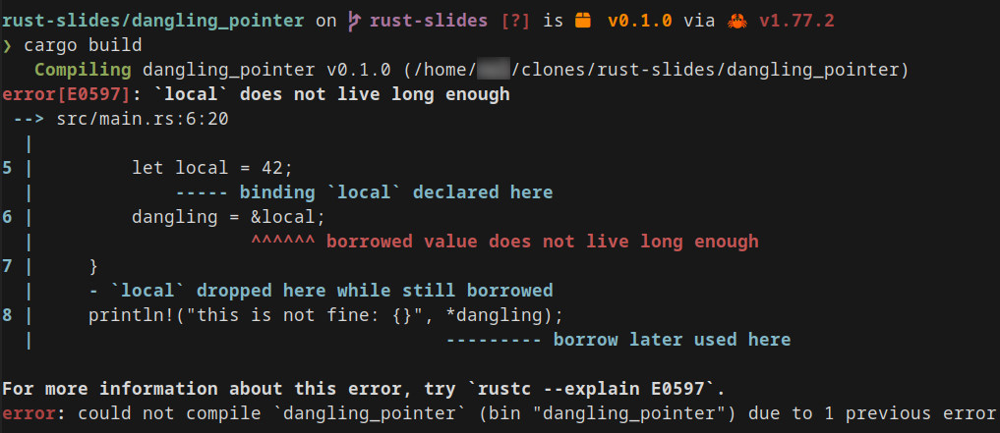

Rust, why the hype?

What is Rust?
- System programming language (like C++)
- Safe, concurrent and fast
- Compiled, without runtime
- Static strong typing
fn main() {
println!("Hello developer's day");
}
A brief history of Rust

Why the hype?
Most loved programming language since 2016
- Modern language & toolchain
- Fast + safe (memory & thread safety)
- The compiler is your
friendmentor
Rust toolchain
Rust unique features
- Ownership & borrowing (who owns/shares the data)
- Lifetime (how long the data lives)
- Enforced by the compiler (compile time)
- ... and many more
Preventing dangling pointer
// neovim + rust-analyzer
fn main() {
let dangling;
{
let local = 42;
dangling = &local;
}
println!("this is not fine: {}", *dangling);
}
// cpp
int main() {
int *dangling;
{
int local = 42;
dangling = &local;
}
std::cout << "this is not fine: "<< *dangling << std::endl;
return 0;
}
What does the compiler say?
// neovim + rust-analyzer
fn main() {
let dangling;
{
let local = 42;
dangling = &local;
}
println!("this is not fine: {}", *dangling);
}

What does your IDE say?

What does your IDE say?
What does your IDE say?